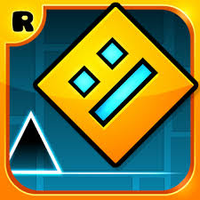
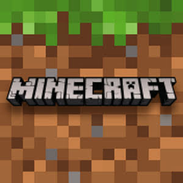

Geometry Dash es un videojuego que jugamos los dos, Tomás y Facundo. En él controlamos distintos vehículos para sortear los obstáculos que hay en cada nivel para llegar al final. En este juego, no hay margen de error. Esto significa que, si fallamos en un salto, tendremos que empezar todo el nivel desde cero, lo que requiere mucha paciencia por parte del jugador. Los niveles están ordenados por dificultad, siendo el orden: Easy, Medium, Hard, Harder, Insane y Demon (que se subdivide en Easy, Medium, Hard, Insane y Extreme Demon). El juego cuenta con 26 niveles oficiales y millones de otros niveles creados por los jugadores.

Minecraft es quizá el videojuego más conocido en la historia. En él, todo es de forma cúbica y pixelada. El objetivo es sobrevivir a un mundo de criaturas hostiles que aparecen en la noche, con los materiales que el jugador tiene a la mano. Luego, se mejora el equipamiento, haciéndolo con materiales de mejor calidad, y, luego, como objetivo final, la mayoría de jugadores trata de matar al Dragón del End, una criatura alada gigantesca que habita en un mundo de islas flotantes conocido como el End, que está poblado por unas criaturas hostiles de forma humanoide llamados Enderman.